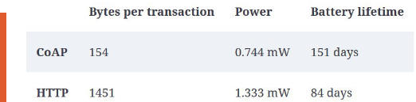
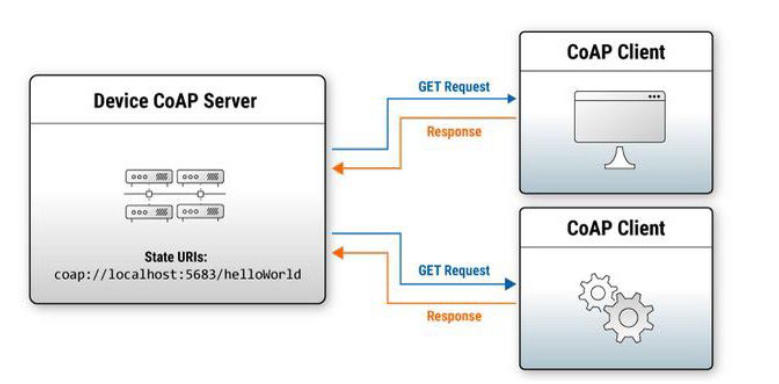

CoAP
Constrained Application Protocol
smaller web protocol (basically), less powerfull than http but lighter weight
resource addressing familiar to anyone with experience of using the web but with reduced resources and bandwidth demands


• HTTP-like
• Connection-less protocols
• Security through DTLS rather than TLS in a normal HTTP transmission
• Asynchronous message exchanges
• Lightweight design and resource requirements and low header overhead
• Support for URI and content-types
• Built upon UDP versus TCP/UDP for a normal HTTP session
• A stateless HTTP mapping allowing for proxies top bridge to HTTP sessions